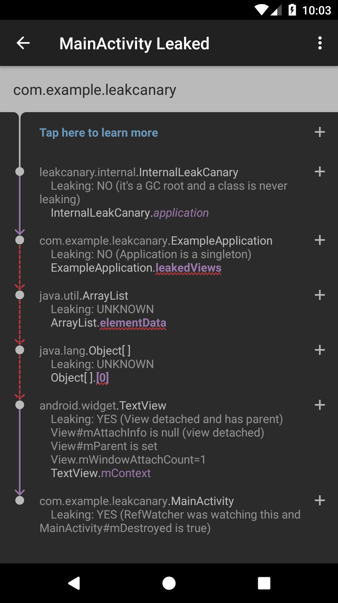

Fundamentals¶
What is a memory leak?¶
In a Java based runtime, a memory leak is a programming error that causes an application to keep a reference to an object that is no longer needed. As a result, the memory allocated for that object cannot be reclaimed, eventually leading to an OutOfMemoryError crash.
For example, an Android activity instance is no longer needed after its onDestroy() method is called, and storing a reference to that activity in a static field would prevent it from being garbage collected.
Common causes for memory leaks¶
Most memory leaks are caused by bugs related to the lifecycle of objects. Here are a few common Android mistakes:
- Storing an Activity context as a field in an object that survives activity recreation configuration changes.
- Registering a listener, broadcast receiver or RxJava subscription which references an object with lifecycle, and forgetting to unregister when the lifecycle reaches its end.
- Storing a view in a static field, and not clearing that field when the view is detached.
Why should I use LeakCanary?¶
Memory leaks are very common in Android apps. OutOfMemoryError (OOM) is the top crash for most apps on the play store, however that’s usually not counted correctly. When memory is low the OOM can be thrown from anywhere in your code, which means every OOM has a different stacktrace and they’re counted as different crashes.
When we first enabled LeakCanary in the Square Point Of Sale app, we were able to find and fix several leaks and reduced the OutOfMemoryError crash rate by 94%.
How does LeakCanary work?¶
Detecting retained instances¶
The foundation of LeakCanary is a library called LeakSentry. LeakSentry hooks into the Android lifecycle to automatically detect when activities and fragments are destroyed and should be garbage collected. These destroyed instances are passed to a RefWatcher, which holds weak references to them. You can also watch any instance that is no longer needed, e.g. a detached view, a destroyed presenter, etc.
If the weak references aren’t cleared after waiting 5 seconds and running the garbage collector, the watched instances are considered retained, and potentially leaking.
Dumping the heap¶
When the number of retained instances reaches a threshold, LeakCanary dumps the Java heap into a .hprof file stored onto the Android file system. The default threshold is 5 retained instances when the app is visible, 1 otherwise.
Analyzing the heap¶
LeakCanary parses the .hprof file and finds the chain of references that prevents retained instances from being garbage collected: the leak trace. Leak trace is another name for the shortest strong reference path from garbage collection roots to retained instances. Once the leak trace is determined, LeakCanary uses its built-in knowledge of the Android framework to deduct which instances in the leak trace are leaking (see below How do I fix a memory leak?).
Grouping leaks¶
Using the leak status information, LeakCanary narrows down the reference chain to a sub chain of possible leak causes, and displays the result. Leaks that have the same causal chain are considered to be the same leak, so leaks are grouped by identical sub chain.
How do I fix a memory leak?¶
For each leaking instance, LeakCanary computes a leak trace and displays it in its UI:

The leak trace is also logged to Logcat:
┬
├─ leakcanary.internal.InternalLeakCanary
│ Leaking: NO (it's a GC root and a class is never leaking)
│ ↓ static InternalLeakCanary.application
├─ com.example.leakcanary.ExampleApplication
│ Leaking: NO (Application is a singleton)
│ ↓ ExampleApplication.leakedViews
│ ~~~~~~~~~~~
├─ java.util.ArrayList
│ Leaking: UNKNOWN
│ ↓ ArrayList.elementData
│ ~~~~~~~~~~~
├─ java.lang.Object[]
│ Leaking: UNKNOWN
│ ↓ array Object[].[0]
│ ~~~
├─ android.widget.TextView
│ Leaking: YES (View detached and has parent)
│ View#mAttachInfo is null (view detached)
│ View#mParent is set
│ View.mWindowAttachCount=1
│ ↓ TextView.mContext
╰→ com.example.leakcanary.MainActivity
Leaking: YES (RefWatcher was watching this and MainActivity#mDestroyed
is true)
Objects and references¶
├─ android.widget.TextView
Each node in the leak trace is a Java object and is either a class, an object array or an instance.
│ ↓ TextView.mContext
Going down, each node has a reference to the next node. In the UI, that reference is in purple. In the Logcat representation, the reference is on the line that starts with a down arrow.
GC Root¶
┬
├─ leakcanary.internal.InternalLeakCanary
│ Leaking: NO (it's a GC root and a class is never leaking)
At the top of the leak trace is a garbage-collection (GC) root. GC roots are special objects that are always reachable. There are four kinds of GC roots worth mentioning:
- Local variables, which belong to the stack of a thread.
- Instances of active Java threads.
- Classes, which never unload on Android.
- Native references, which are controlled by native code.
Leaking instance¶
╰→ com.example.leakcanary.MainActivity
Leaking: YES (RefWatcher was watching this and MainActivity#mDestroyed
is true)
At the bottom of the leak trace is the leaking instance. This instance was passed to RefWatcher.watch() to confirm it would be garbage collected, and it ended up not being garbage collected which triggered LeakCanary.
Chain of references¶
...
│ ↓ static InternalLeakCanary.application
...
│ ↓ ExampleApplication.leakedViews
...
│ ↓ ArrayList.elementData
...
│ ↓ array Object[].[0]
...
│ ↓ TextView.mContext
...
The chain of references from the GC root to the leaking instance is what is preventing the leaking instance from being garbage collected. If you can identify the reference that should not exist at that point in time, then you can figure out why it’s incorrectly still set and then fix the memory leak.
Heuristics and labels¶
├─ android.widget.TextView
│ Leaking: YES (View detached and has parent)
LeakCanary runs heuristics to determine the lifecycle state of the nodes of the leak trace, and therefore whether they are leaking or not. For example, if a view has View#mAttachInfo = null and mParent != null then it is detached yet has a parent, so that view is probably leaking. In the leak trace, for each node you’ll see Leaking: YES / NO / UNKNOWN with an explanation in parenthesis. You can customize this behavior and add your own heuristics.
│ View#mAttachInfo is null (view detached)
│ View#mParent is set
│ View.mWindowAttachCount=1
LeakCanary can also surface extra information about the state of a node, e.g. View.mWindowAttachCount=1. You can add your own labels.
Narrowing down the cause of a leak¶
┬
├─ leakcanary.internal.InternalLeakCanary
│ Leaking: NO (it's a GC root and a class is never leaking)
│ ↓ static InternalLeakCanary.application
├─ com.example.leakcanary.ExampleApplication
│ Leaking: NO (Application is a singleton)
│ ↓ ExampleApplication.leakedViews
│ ~~~~~~~~~~~
├─ java.util.ArrayList
│ Leaking: UNKNOWN
│ ↓ ArrayList.elementData
│ ~~~~~~~~~~~
├─ java.lang.Object[]
│ Leaking: UNKNOWN
│ ↓ array Object[].[0]
│ ~~~
├─ android.widget.TextView
│ Leaking: YES (View detached and has parent)
│ ↓ TextView.mContext
╰→ com.example.leakcanary.MainActivity
Leaking: YES (RefWatcher was watching this and MainActivity#mDestroyed is true)
If a node is not leaking, then any prior reference that points to it is not the source of the leak, and also not leaking. Similarly, if a node is leaking then any node down the leak trace is also leaking. From that, we can deduce that the leak is caused by a reference that is after the last Leaking: NO and before the first Leaking: YES.
LeakCanary highlights those references with a red underline in the UI, or a ~~~~ underline in the Logcat representation. These highlighted references are the only possible causes of the leak. These are the references you should spend time investigating.
In this example, the last Leaking: NO is on com.example.leakcanary.ExampleApplication and the first Leaking: YES is on android.widget.TextView, so the leak is caused by one of the 3 references in between:
...
│ ↓ ExampleApplication.leakedViews
│ ~~~~~~~~~~~
...
│ ↓ ArrayList.elementData
│ ~~~~~~~~~~~
...
│ ↓ array Object[].[0]
│ ~~~
...
Looking at the source, we can see that ExampleApplication has a list field:
open class ExampleApplication : Application() {
val leakedViews = mutableListOf<View>()
}
It’s unlikely that there’s a bug in the ArrayList implementation itself, so the leak happens because we’re adding views to ExampleApplication.leakedViews. If we stop doing that, we’ve fixed the leak!
Asking for help with a leak¶
If you cannot figure out a leak, please do not file an issue. Instead, create a Stack Overflow question using the leakcanary tag.
LeakCanary artifacts¶
LeakCanary is released as several distinct libraries:
- LeakSentry
- Detects retained instances.
- Suitable for release builds.
- Artifact id:
com.squareup.leakcanary:leaksentry.
- LeakCanary
- Dumps the heap and analyzes it.
- Currently only suitable for debug builds.
- Depends on LeakSentry.
- Artifact id:
com.squareup.leakcanary:leakcanary-android.
- LeakCanary for Instrumentation tests
- Fails tests if a leak is detected
- Only suitable for Instrumentation tests
- Configures LeakCanary to wait for the end of tests before dumping the heap.
- Artifact id:
com.squareup.leakcanary:leakcanary-android-instrumentation. - See Running LeakCanary in instrumentation tests